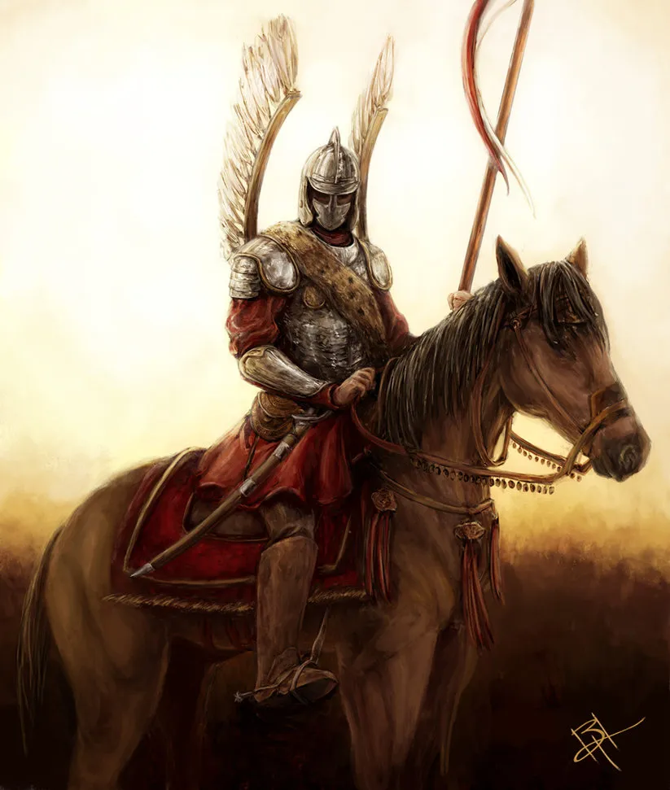
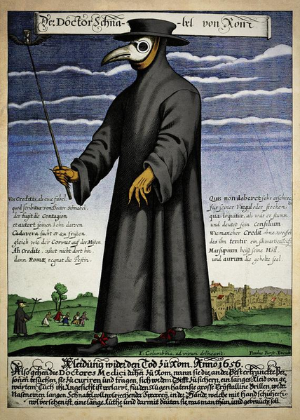

Na codzień uczniowe zobowiązani sa do noszenia mundurka, który składa sie z: zbroi oraz piór. Strój ten zapweni uczniom bezpieczeństwo zarówno w szkole jak i poza nią.(koń jest opcjonalnym elementem)
Uczniowie odbywający zajęcia na terenie laboratriów powinni nosić strój ochronny z maską kruka, która zadba o ich bezpieczeństwo podczas zajec.
